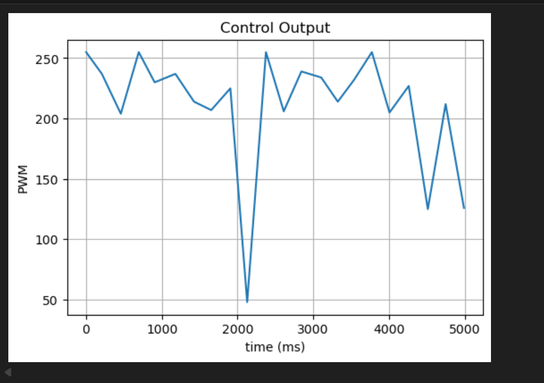
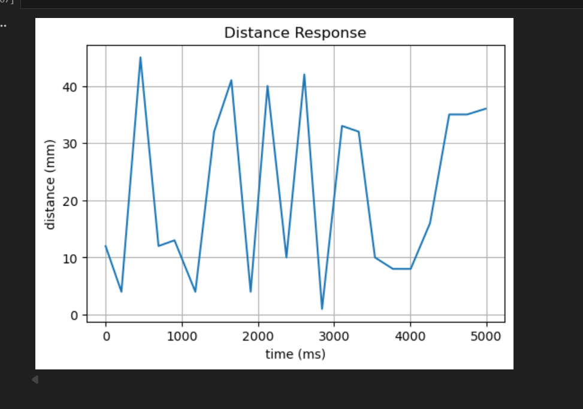

Lab 5: Linear PID control and Linear interpolation
Lab 5
Goals
-
The goal of this lab is to design and implement an effective PID-based position controller for the robot, demonstrating both understanding of PID control and awareness of practical implementation constraints.
Prelab
-
]
Before implementing closed-loop PID control, I first verified the BLE-based debugging pipeline.
The goal of this prelab step was to confirm that the computer could send commands to the Artemis,
the robot could execute a short behavior for a fixed amount of time, and debugging data could be
successfully recorded and returned for later analysis.
To validate the sensing and logging path, I manually moved the robot while recording the ToF distance
over time. Since the robot was moved by hand rather than autonomously controlled, the signal in
Figure 1 is not expected to be smooth. This figure simply demonstrates that ToF data
could be sampled, logged, and visualized correctly through the BLE workflow.

-
I also verified that motor command data could be recorded correctly. During the same prelab process,
PWM control values were logged and visualized, as shown in Figure 2. The purpose of
this plot was not to evaluate control quality, but to confirm that motor input data could also be
transmitted, stored, and analyzed correctly.
Together, these two plots confirm that the full debugging chain was working properly before the main
PID experiments: BLE command transmission, onboard execution, sensor/motor logging, and post-run data
visualization.

Lab Tasks
Lab Task 1: ToF Sampling and Control Loop Design
-
The ToF sensor and the controller were decoupled in software. Instead of forcing the
controller to wait for a new ToF reading every iteration, the robot continuously updated
the latest valid ToF measurement in the background and let the controller run at a fixed
interval.
In the final implementation, the control loop was executed every 40 ms, corresponding to
a control frequency of about 25 Hz. This fixed-period design made the robot behavior more
stable than directly tying each control update to a new sensor frame.
Only valid ToF frames were used to update the stored distance value. If a frame was invalid,
it was ignored rather than immediately clearing the reading. The controller then checked
whether the most recent valid measurement was still fresh enough to use. If no fresh valid
ToF reading was available, the motors were stopped to avoid acting on stale sensor data.
This design directly addressed the mismatch between sensor timing and control timing.
The ToF sensor could update asynchronously, while the controller maintained a regular
execution period for closed-loop control.
ToF Update Code
static void update_current_tof_reading()
{
if (!tof.checkForDataReady()) return;
uint16_t mm = tof.getDistance();
uint8_t status = tof.getRangeStatus();
tof.clearInterrupt();
current_tof_status = status;
if (status == 0 && mm >= 40 && mm <= 4000)
{
current_tof_reading = mm;
current_tof_time_ms = millis();
tof_has_valid = true;
}
}
static bool tof_recent_valid_available()
{
if (!tof_has_valid) return false;
return (millis() - current_tof_time_ms) <= TOF_FRESH_TIMEOUT_MS;
}
Fixed-Period Control Loop Code
const unsigned long PID_CTRL_PERIOD_MS = 40;
if ((now_ms - pid_last_ctrl_ms) >= PID_CTRL_PERIOD_MS)
{
pid_last_ctrl_ms = now_ms;
pid_pos_control();
}
Controller Use of the Latest Valid ToF
if (!tof_recent_valid_available())
{
motor_active_brake();
return;
}
current_error = (float)current_tof_reading - (float)pid_pos_target;
The control loop was executed every 40 ms, corresponding to about 25 Hz. In contrast, the ToF sensor updated asynchronously at a lower and non-uniform rate, so sensing and control were decoupled in software.
This decoupling was necessary because directly waiting for every new ToF frame would make the control loop irregular and less stable.
Lab Task 2: Controller Development (P → PD → PID)
-
The controller was developed incrementally. I first tuned the proportional gain using
three candidate values,
P = 0.3, 0.5, and 1.0.
Among these values, P = 0.5 provided the best balance between responsiveness
and stability, so it was selected as the baseline gain.
After that, derivative control was added to reduce overshoot and improve braking behavior.
With P = 0.5 fixed, I compared three derivative gains:
D = 1.2, 1.5, and 2.0. These tests are shown in
Video 1, Video 2, and Video 3.
In Video 1 (P = 0.5, D = 1.2), the robot reached the target
region but showed noticeable backward correction. In Video 2
(P = 0.5, D = 1.5), the stopping behavior was the most stable, with the
smallest visible oscillation. In Video 3 (P = 0.5, D = 2.0),
the derivative action became too strong, leading to separated forward/backward adjustments.
Based on these comparisons, D = 1.5 was selected as the best derivative gain.
After selecting the best PD gains, an integral term was introduced to form a full PID
controller. Three integral gains were tested: I = 0.01, 0.02,
and 0.03. Among them, I = 0.02 produced the best overall result.
The final selected controller was therefore P = 0.5, I = 0.02,
and D = 1.5, shown in Video 4.
Controller Gain Definition
float Kp_pos = 0.50f;
float Ki_pos = 0.02f;
float Kd_pos = 1.50f;
Core PID Control Terms
P_term = Kp_pos * current_error;
I_term = Ki_pos * error_integral;
D_term = Kd_pos * dist_rate_filt;
control_u = P_term + I_term + D_term;
Motor Command Output
if (control_u > 0)
{
pwm_cmd = pwm;
motor_forward_pwm(pwm);
}
else
{
pwm_cmd = -pwm;
motor_backward_pwm(pwm);
}
Lab Task 3: Anti-Windup
-
To satisfy the 5000-level requirement, I further evaluated integrator wind-up using the
final PID controller. The selected baseline gains were
P = 0.5,
I = 0.02, and D = 1.5.
With anti-windup enabled, the robot could approach the target and stop in a controlled
manner, as shown previously in Video 4. I then disabled anti-windup
while keeping the same PID gains and repeated the experiment.
Without anti-windup, the integral term continued to accumulate during large-error motion
and actuator saturation. As a result, the robot exhibited excessive overshoot and
eventually crashed into the wall, as shown in Video 5. This behavior
clearly demonstrates the importance of integrator wind-up protection in this system.
Therefore, anti-windup was necessary for the final PID controller. With the same gains,
the controller with anti-windup was significantly more stable and controllable than the
version without it.
Anti-Windup Implementation
if (anti_windup_enable)
{
if (I_term > ITERM_MAX) I_term = ITERM_MAX;
if (I_term < -ITERM_MAX) I_term = -ITERM_MAX;
if (fabs(Ki_pos) > 1e-6f)
{
error_integral = I_term / Ki_pos;
}
}
-
Anti-windup was implemented by clamping the integral term and keeping the internal integral state consistent with the clamped value.
Conclusion
- The comparison between Video 4 and Video 5 shows that anti-windup is essential for preventing excessive overshoot in the final PID controller.
- Without anti-windup, the integral term can continue to grow while the motor output is already saturated, which makes the robot much more likely to overshoot or collide with the wall. With anti-windup enabled, the same PID gains produced a much safer and more stable stopping response.
Appendix
1. An announcement of AI usage
I used AI tools to support parts of this lab, mainly for webpage/HTML formatting, minor code edits and debugging, and polishing the written explanations for clarity and conciseness. Throughout the assignment, I verified the suggestions against the lab requirements, tested changes on my own setup, and made final design and implementation decisions independently based on my own understanding.